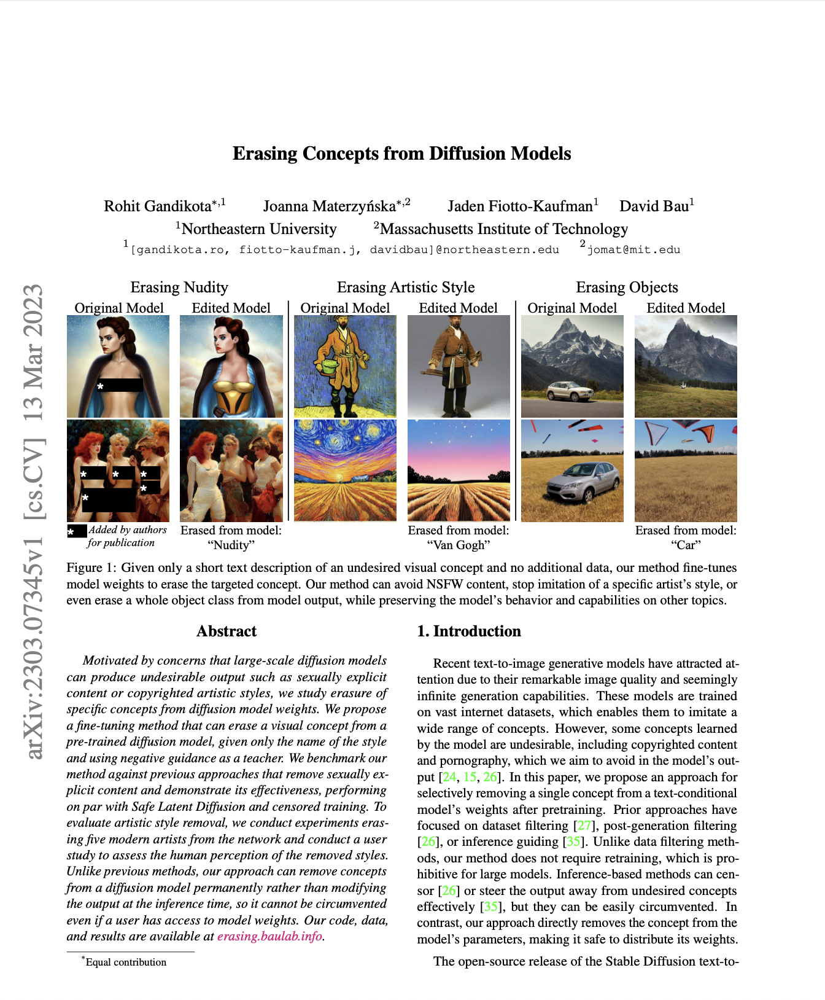

ArXiv
Preprint

Source Code
Github
How to erase concepts from diffusion model weights?
With the recent advancements in image generation quality, there is a growing concern for safety, privacy and copyrighted content in diffusion model generated images. From inappropriate content generation to artistic style mimicing, recent works attempt to restrict such content via inference methods or post generation classification restriction. Such methods can be easily circumvented when users have access to open source weights.
In this paper, we propose a model weights fine-tuning to erase concepts from diffusion models using their own knowledge. Given just the text of the concept to be erased, our method can edit the model weights to erase the concept while keeping the inteference with other concepts minimal. This type of fine-tuning has an advantage over inference methods where it is difficult to circumvent even with open-sourced weights while avoiding the expense of retraining the data on filtered training dataset.
Why erase concepts from diffusion model?
Large scale image generation models like stable-diffusion have the capability to generate hyper realistic content. Since they mimic the knowledge of the training dataset, they are also capable of generating nudity, mimic particular artistic styles, generate undesired objects. This could be of a concern to institutions hosting the APIs or releasing their models for research.
Michael Cavna, "Artists are alarmed by AI - and they're fighting back", Washington Post, Feb 14 2023
There are methods to mitigate such content post production or during inference, but are easy to bipass. We propose finetuning the weights for a small number of iterations using simply the text description of such concepts and erase them permanently from the weights.
How to erase concepts from the model?
We simply use the vast knowledge of the model itself to unlearn a particular concept. Instead of collecting a dataset of images corresponding to the concept that one intends to erase, we propose using the generative capabilities of the pre-trained model.

What weights to edit?
Cross attentions act as a gateway for text conditioning in the image generation process. Naturally, these attention heads activate when a certain token is present in the text prompt. Where as self attentions are active irrrespective of the text conditioning. They attend to the visual aspect of a concept.

With this evidence, we propose ESD-x, finetuning cross attention to erase a concept. This has a very narrow effect on the distribution, especially when the concept is mentioned in the prompt. Such finer effect is desirable in case of art erase, where not all artists would want their styles to be erased. ESD-u, finetuning all the unconditional layers (all layers except cross attentions) for a more generalised, unconditional and global erasure effect.
Artist Style Erasure
With the concern arising from recent lawsuits, artistic style erasure can be of interest for many artists and organizations. Since this is a more sensitive erasure where specific art styles need to be erased while keeping the interference to minimal, we propose ESD-x for this application

Nudity Erasure
Since nudity content can be generated without explicitly mentioning the word "nudity", we propose using ESD-u. Compared the inference techniques, our method has a much aggresive erasure effect on a dataset that explicitly creates innapropriate content.

Object Erasure
Erasing undesired objects can also be done using ESD-u, since the effect requires to be global and not text specific
Limitations
For both NSFW erasure and artistic style erasure, we find that our method is more effective than baseline approaches on erasing the targeted visual concept, but when erasing large concepts such as entire object classes or some particular styles, our method can impose a trade-off between complete erasure of a visual concept and interference with other visual concepts.

How to cite
The preprint can be cited as follows.
bibliography
Rohit Gandikota, Joanna Materzyńska, Jaden Fiotto-Kaufman, David Bau. "Erasing Concepts from Diffusion Models." arXiv preprint
bibtex
@article{gandikota2023erasing,
title={Erasing Concepts from Diffusion Models},
author={Rohit Gandikota and Joanna Materzy\'nska and Jaden Fiotto-Kaufman and David Bau},
journal={arXiv preprint arXiv:2303.07345},
year={2023}
}